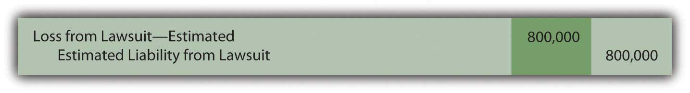

At the end of this section, students should be able to meet the following objectives:
Question: The December 31, 2008, balance sheet for E. I. du Pont de Nemours and Company (better known as DuPont) shows total liabilities of approximately $28.7 billion. Immediately following the liability section, a separate category titled “Commitments and Contingent Liabilities” is included but no monetary figure is presented. Note 19 to the financial statements provides further details. In several pages of explanatory material, a number of future matters facing the company are described such as product warranties, environmental actions, litigation, and purchase commitments. In financial reporting, what is meant by the terms “commitments” and “contingencies” (including loss and gain contingencies)?
Answer:
Commitments. Commitments represent unexecuted contracts. For example, assume that a business places an order with a truck company for the purchase of a large truck. The business has made a commitmentAn unexecuted contract such as for the future purchase of inventory at a set price; necessitates disclosure of extensive information in the financial statement footnotes although amounts are not reported on the balance sheet or income statement because no transaction has yet occurred. to pay for this new vehicle but only after it has been delivered. Although cash may be needed in the future, no event (delivery of the truck) has yet created a present obligation. There is not yet a liability to report; no journal entry is appropriate.
The information is still of importance to decision makers because future cash payments will be required. However, events have not reached the point where all the characteristics of a liability are present. Thus, extensive information about commitments is included in the notes to financial statements but no amounts are reported on either the income statement or the balance sheet. With a commitment, a step has been taken that will likely lead to a liability.
Contingencies. A contingencyA potential gain or loss that might arise as a result of a past event; uncertainty exists as to likelihood of the gain or loss occurring and the actual amount, if any, that will result. poses a different reporting quandary. A past event has occurred but the amount of the present obligation (if any) cannot yet be determined. With a contingency, the uncertainty is about the outcome of an action that has already taken place. The accountant is not a fortune teller who can predict the future. For example, assume Wysocki Corporation commits an act that is detrimental to the environment so that the federal government files a lawsuit for damages. The original action against the environment is the past event that creates the contingency. However, both the chance of losing the suit and the possible amount of any penalties might not be known definitively for several years. What, if anything, should be recognized in the interim?
Because companies prefer to avoid (or at least minimize) the recognition of losses and liabilities, it is not surprising that structured guidelines are needed for reporting contingencies. Otherwise, few if any contingencies would ever be reported. U.S. GAAP in this area was established in 1975 when FASB issued its Statement Number Five, “Accounting for Contingencies.” This pronouncement requires the recognition of a loss contingencyA potential loss resulting from a past event that must be recognized on an entity’s financial statements if it is deemed probable and the amount involved can be reasonably estimated. if
When both of these criteria are met, the expected impact of the loss contingency is recorded. To illustrate, assume that the lawsuit above was filed in Year One. Wysocki officials assess the situation. They believe that a loss is probable and that $800,000 is a reasonable estimation of the amount that will eventually have to be paid as a result of the damage done to the environment. Although this amount is only an estimate and the case has not been finalized, this contingency must be recognized.
Figure 13.7 Year One—Expected Loss from Lawsuit
FASB identifies a number of examples of loss contingencies that are evaluated and reported in this same manner including:
Question: The likelihood of loss in connection with many contingencies is not always going to be probable or subject to a reasonable estimation. What reporting is appropriate for a loss contingency that does not qualify for recording at the present time?
Answer: If the likelihood of loss is only reasonably possible (rather than probable) or if the amount of a probable loss does not lend itself to a reasonable estimation, only disclosure in the notes to the financial statements is necessary rather than actual recognition. A contingency where the chance of loss is viewed as merely remote can be omitted from the financial statements.
Unfortunately, this official standard provides little specific detail about what constitutes a probable, reasonably possible, or remote loss. “Probable” is described in Statement Number Five as likely to occur and “remote” is a situation where the chance of occurrence is slight. “Reasonably possible” is defined in vague terms as existing when “the chance of the future event or events occurring is more than remote but less than likely” (paragraph 3). The professional judgment of the accountants and auditors is left to determine the exact placement of the likelihood of losses within these categories.
Not surprisingly, many companies contend that future adverse effects from all loss contingencies are only reasonably possible so that no actual amounts are reported. Practical application of official accounting standards is not always theoretically pure, especially when the guidelines are nebulous.
Question: Assume that a company recognizes a contingent loss because it is judged to be probable and subject to a reasonable estimation. Eventually, all estimates are likely to prove wrong, at least in some small amount. What happens when a figure is reported in a set of financial statements and the actual total is later found to be different?
For example, Wysocki Corporation recognized an estimated loss of $800,000 in Year One because of a lawsuit involving environmental damage. Assume the case is eventually settled in Year Two for $900,000. How is the additional loss of $100,000 reported? It relates to an action taken in Year One but the actual amount is not finalized until Year Two. The difference is not apparent until the later period.
Answer: In Year One, because both criteria were met, an $800,000 loss was recognized on the income statement along with a corresponding liability. Notes to the financial statement explain the nature of this lawsuit as well as the range of any reasonably possible losses. Decision makers analyzing the Wysocki Corporation should realize that the amount reported is not a precise measure of the eventual loss. The same is true of all contingencies and other estimations. By the time that the exact amount of loss is determined, investors and creditors have already incorporated the original information into their decisions, including the uncertainty of the outcome. Restating the Year One loss to $900,000 does not allow them to undo and change the decisions that were made in the past.
Consequently, no change is made in the $800,000 figure reported for Year One; the additional $100,000 loss is recognized in Year Two. The amount is fixed at the time that a better estimation (or final figure) is available. This same reporting is utilized in correcting any reasonable estimation. Wysocki corrects the balances through the following journal entry that removes the liability and records the remainder of the loss.
Figure 13.8 Year Two—Settlement of Lawsuit
One important exception to this handling does exist. If the initial estimation was viewed as fraudulent—an attempt to deceive decision makers—the $800,000 figure reported in Year One is physically restated. It simply cannot continue to appear. All the amounts in a set of financial statements have to be presented in good faith. Any reported balance that fails this essential criterion is not allowed to remain. Furthermore, even if there was no overt attempt to deceive, restatement is still required if officials should have known that a reported figure was materially wrong. Such amounts were not reported in good faith; officials have been grossly negligent in reporting the financial information.
From a journal entry perspective, restatement of a previously reported income statement balance is accomplished by adjusting retained earnings. Revenues and expenses (as well as gains, losses, and any dividend paid figures) are closed into retained earnings at the end of each year. That is where the previous year error now resides.
Consequently, upon discovery that the actual loss from this lawsuit is $900,000, that amount is shown by one of the following two approaches:
Figure 13.9 Two Ways to Fix an Estimation

Link to multiple-choice question for practice purposes: http://www.quia.com/quiz/2092998.html
Question: The previous discussion has been about loss contingencies. Companies obviously can also have gain contingenciesA potential gain resulting from a past event that is not recognized in the financial statements until it actually occurs due to the principle of conservatism.. In a lawsuit, for example, one party might anticipate winning $800,000 but eventually collect $900,000. Are the rules for reporting gain contingencies the same as those applied to loss contingencies?
Answer: As a result of the conservatism inherent in financial accounting, the timing used in the recognition of gains does not follow the same rules applied to losses. Losses are anticipated when they become probable; that is a fundamental rule of financial accounting. Recognition of gains is delayed until they actually occur (or, at least until they reach the point of being substantially complete). Disclosure in the notes is still important but the decision as to whether the outcome is probable or reasonably possible is irrelevant in reporting a gain. Gains are not anticipated for reporting purposes.
Figure 13.10 Reporting a Gain Contingency

Link to multiple-choice question for practice purposes: http://www.quia.com/quiz/2093019.html
Following is a continuation of our interview with Robert A. Vallejo, partner with the accounting firm PricewaterhouseCoopers.
Question: According to U.S. GAAP, a contingent loss must be recognized when it is probable that it will occur and a reasonable estimation of the amount can be made. That rule has been in place now for over thirty years and is well understood in this country. Are contingent losses handled in the same way by IFRS?
Robert Vallejo: The theory is the same under IFRS but some interesting and subtle differences do exist. If there is a probable future outflow of economic benefits and the company can form a reliable estimate, then that amount must be recognized. However, the term “probable” is defined as “more likely than not” which is much more easily reached than under the requirements of U.S. GAAP. Thus, the reporting of more contingent losses is likely under IFRS than currently under U.S. GAAP.
IAS 37, Provisions, Contingent Liabilities and Contingent Assets, states that the amount recorded should be the best estimate of the expenditure that would be required to settle the present obligation at the balance sheet date. That is the best estimate of the amount that an entity would rationally pay to settle the obligation at the balance sheet date or to transfer it to a third party. Under U.S. GAAP, if there is a range of possible losses but no best estimate exists within that range, the entity records the low end of the range. Under IFRS, the entity records the midpoint of the range. That is a subtle difference in wording, but it is one that could have a significant impact on financial reporting for organizations where expected losses exist within a very wide range.
Entities often make commitments that are future obligations that do not yet qualify as liabilities that must be reported. For accounting purposes, they are only described in the notes to financial statements. Contingencies are potential liabilities that might result because of a past event. The likelihood of loss or the actual amount of the loss is still uncertain. Loss contingencies are recognized when their likelihood is probable and this loss is subject to a reasonable estimation. Reasonably possible losses are only described in the notes and remote contingencies can be omitted entirely from financial statements. Estimations of such losses often prove to be incorrect and normally are simply fixed in the period discovered. However, if fraud, either purposely or through gross negligence, has occurred, amounts reported in prior years are restated. Contingent gains are only reported to decision makers through disclosure within the notes to the financial statements.